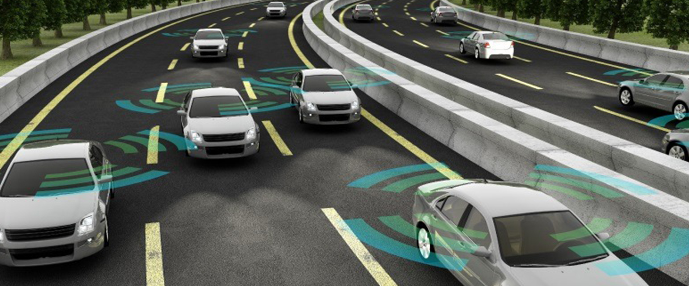

Self driving cars
Definition of self driving cars and how they work
A self driving car is defined as a car that is capable of sensing its environment and moving safely with little or no human input. They work by collecting large amounts of data from cameras located around the car providing it with a 360 degree view of its surrounding.This data is then fed into a machine learning algorithm which along with other data allows the car to drive itself.
Different levels of self driving
The U.S. National Highway Traffic Safety Administration (NHTSA) lays out six levels of automation, beginning with Level 0, where humans do the driving, through driver assistance technologies up to fully autonomous cars. Here are the five levels that follow Level 0 automation:
- Level 1: An advanced driver assistance system (ADAS) aids the human driver with steering, braking or accelerating, though not simultaneously. An ADAS includes rear view cameras and features like a vibrating seat warning to alert drivers when they drift out of the traveling lane.
- Level 2: An ADAS that can steer and either brake or accelerate simultaneously while the driver remains fully aware behind the wheel and continues to act as the driver.
- Level 3: An automated driving system (ADS) can perform all driving tasks under certain circumstances, such as parking the car. In these circumstances, the human driver must be ready to retake control and is still required to be the main driver of the vehicle.
- Level 4: An ADS can perform all driving tasks and monitor the driving environment in certain circumstances. In those circumstances, the ADS is reliable enough that the human driver needn't pay attention.
- Level 5: The vehicle's ADS acts as a virtual chauffeur and does all the driving in all circumstances. The human occupants are passengers and are never expected to drive the vehicle.
Benefits to self driving cars
When it comes to self driving cars there are many ways that they are helping with the community. Some benefits are as followed:
- Safer roads: self driving cars will reduce the hazards from risky behavior such as impaired, drunk, drugged driving, reckless speeding and distracted driver due to then quite literally taking the wheel
- More Independence: Autonomous vehicles will grant those with handicaps and disabilities, such as blindness, paralyzation, and mental disabilities, as well as seniors, more autonomy and independence.
- Saves Money: Reduced crashes means reduced costs for those involved in the accident – in hospital bills, post accident therapy, vehicle repair and sick leave from work. Also, fewer accidents on the road means that car insurance companies will have to lower rates and consumers will save greatly.
- Eco-Driving: Driverless cars will be able to optimize driving conditions This includes utilizing cruise control and gradual and smooth acceleration and deceleration, all of which contribute to a steady flow of traffic rather than the constant bursts of hitting the gas pedal and then the brakes.
- Less Congestion: By lowering automotive accidents there will be less traffic due to lane closures, self-driving cars will also be able to adapt their speeds based on traffic eliminating "stop and go waves"
- Free Up Parking Spaces: due to the cars being self driven they will be able to park further away from offices and homes, reducing the need for large car parks or garages